After the completion of this lesson, students will be able to:
Magnets are objects of stone, metal or other material which have the property of attracting metals like iron, cobalt and nickel. The attracting property of a magnet is called magnetism and it is either natural or induced. The branch of physics which deals with the property of a magnet is also called magnetism. The earliest evidence for magnets is found in a region of Asia Minor called Magnesia. It is believed that the Chinese had known the property of magnet even before 200 B.C. They used a magnetic compass for navigation in 1200 A.D. Use of magnets in compasses facilitated long-distance sailing. After the discovery of magnets, the world progressed into a new direction. Today magnets play an important role in our lives. Magnets are used in refrigerators, computers, car engines, elevators and many other devices. In this lesson we will study about the types, properties and uses of magnets.
Magnets are classified into two types. They are natural magnets and artificial magnets.
Natural Magnets
Magnets found in the nature are called natural magnets. They are permanent magnets i.e., they will never lose their magnetic power. These magnets are found in different places of the earth in the sandy deposits. Lodestone called magnetite (Iron oxide) which is the ore of iron is the strongest natural magnet. Minerals like Pyrrhotite (Iron Sulphide), Ferrite and Coulum bite are also natural magnets.
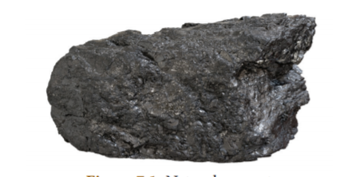
Do you know?
There are three types of iron ores. They are: Hematite (69 percentage of Iron), Magnetite (72.4 percentage of Iron) and Siderite (48.2 percentage of Iron). Magnetite is an oxide ore of iron with the formula F e 3 O 4. Among these ores, magnetite has more magnetic property.
Artificial Magnets
Magnets that are made by people in the laboratory or factory are called artificial magnets. These are also known as manmade magnets, which are stronger than the natural magnets. Artificial magnets can be made in various shapes and dimensions. Bar magnets, U-shaped magnets, horseshoe magnets, cylindrical magnets, disc magnets, ring magnets and electromagnets are some examples of artificial magnets. Artificial magnets are usually made up of iron, nickel, cobalt, steel, etc. Alloy of the metals Neodynium and Samarium are also used to make artificial magnets.
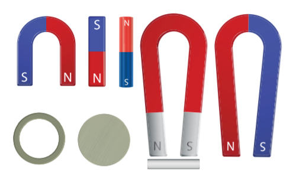
Table 7 point 1 Difference between natural and artificial magnets
Natural Magnets |
Artificial Magnets |
These are found in nature and have irregular shapes and dimensions. |
These are man-made magnets. They can be made in different shapes and dimensions. |
The strength of a natural magnet is well determined and difficult to change. |
Artificial magnets can be made with required and specific strength. |
These are long lasting magnets |
Their properties are time bound. |
They have a less usage. |
They have a vast usage in day to day life. |
Know Your Scientist
William Gilbert laid the foundation for magnetism and suggested that the Earth has a giant bar magnet. William Gilbert was born on 24th May 1544. He was the first man who performed the systematic research on the properties of the lodestone (magnetic iron ore) and published his findings in the influential ‘De Magnete’ (The Magnet).
The properties of a magnet can be explained under the following headings.
A magnet always attracts materials like iron, cobalt and nickel. To understand the attractive property of a magnet let us do an experiment.
Activity 1 Take some iron filings in a paper and place a magnet near them. Do you see the iron filings being attracted by the magnet? In which part of the magnet they are attracted?
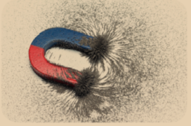
You can observe here that the iron filings are attracted near the ends of the magnet. These ends are called poles of a magnet. This shows that the attractive property of a magnet is more at the poles. One pole of the magnet is called the North Pole and the other pole is called the South Pole. Magnetic poles always exist in pairs.
What happens when a bar magnet is broken into two pieces? Each broken piece behaves like a separate bar magnet. When a magnet is split vertically, the length of the magnet is altered and each piece acts as a magnet. When a magnet is split horizontally, the length of the new pieces of magnet remains unaltered and there is no change in their polarity. In both cases the strength of the magnet is reduced.
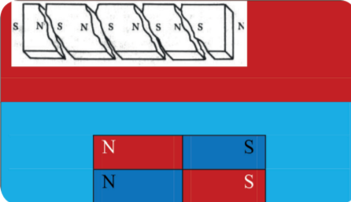
Activity 2 Take a bar magnet and suspend it from a support. Hold another bar magnet in your hand. Bring the north pole of this magnet close to the north pole of the suspended magnet. What do you see? The north pole of the suspended magnet will move away.
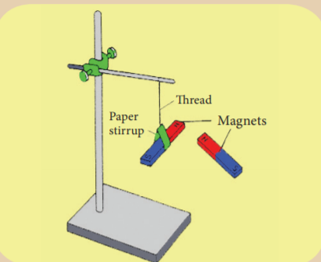
This activity explains another property of a magnet that like poles repel each other i.e., a north pole repels another north pole and a south pole repels another south pole. If you bring the south pole of the magnet close to the north pole of the suspended magnet you can see that the south pole of the suspended magnet is immediately attracted. Thus, we can conclude that unlike poles of a magnet attract each other. i.e., the north pole and the south pole of a magnet attract each other.
Activity 3 Suspend a bar magnet from a rigid support using a thread. Ensure that there are no magnetic substances placed near it. Gently disturb the suspended magnet. Wait for a moment, let it oscillate. In a short time it will come to rest. You can see that the north pole of the magnet is directed towards the geographic north. Repeat the procedure a number of times. You will observe that the magnet is oriented in the same direction.
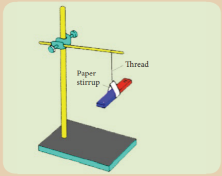
This experiment shows that a freely suspended bar magnet always aligns itself in the geographic north-south direction. The property of a magnet, by which it aligns itself along the geographic north-south direction, when it is freely suspended, is known as the directive property of a magnet. The north pole of the magnet points towards the geographic north direction and the south pole of the magnet points towards the geographic south direction.
Activity 4 Spread some iron filings collected from the sand uniformly on a sheet of white paper placed on a table. Place a bar magnet below the white sheet. Gently tap the table. What do you see? You can see the pattern as shown in the figure.
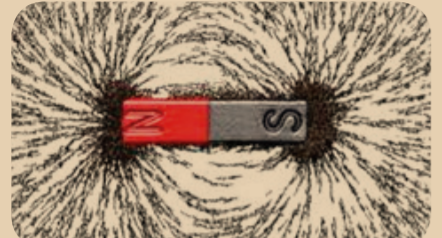
You can observe from this experiment that the iron filings are arranged in the form of curved patterns around the magnet. The space around the bar magnet where the arrangement of iron filings exists, represents the field of influence of the bar magnet. It is called the magnetic field. Magnetic field is defined as the space around a magnet in which its magnetic effect or influence is observed. It is measured by the unit tesla or gauss (1 tesla equal to 10,000 gauss).
We can trace the magnetic field with the help of a compass needle. A white sheet of paper is fastened on the drawing board using the board pins or cello tape. A small plotting compass needle is placed near the edge of the paper and the board is rotated until the edge of the paper is parallel to the magnetic needle. The compass needle is then placed at the centre of the paper and the ends of the needle, i.e., the new positions of the north and south pole are marked when the needle comes to rest. These points are joined and a straight line is obtained. This line represents the magnetic meridian. Cardinal directions North-East-South-West are drawn near the corner of the paper.
The bar magnet is placed on the line at the centre of the paper with its north pole facing the geographic north. The outline of the bar magnet is drawn. The plotting compass is placed near the North Pole of the bar magnet and the end of the needle (north pole) is marked. Now the compass is moved to a new position, such that its south pole occupies the position previously occupied by its north pole. In this way it is proceeded step by step till the compass is placed near the south pole of the magnet. Deflecting points are marked. A curved line is then drawn by joining the plotted points marked around the magnet. This represents the magnetic line of force. In the same way several magnetic lines of force are drawn around the magnet as shown in the Figure 7 point 4. These curved lines around the bar magnet represent the magnetic field of the magnet. The direction of the lines is shown by the arrow heads.
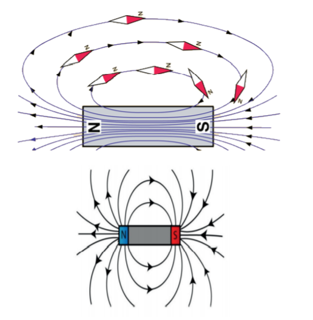
We can observe here that the compass needle gets deflected to a large extent, when it is closer to the magnet. When the distance is large, the deflection of the needle is gradually decreased. At one particular position there is no deflection because there is no magnetic force at this position. This shows that each magnet exhibits its magnetic influence around a specific region.
Do you know?
A compass needle, also known as plotting compass or magnetic needle, consists of a tiny pivoted magnet in the form of a pointer, which can rotate freely in the horizontal plane. The ends of the compass needle point approximately towards the geographic north and south direction.
Activity 5 Spread some iron pins, stapler pins, iron nails, small pieces of paper, a scale, an eraser and a plastic cloth hanger on a wooden table. Place a magnet nearby these materials. What do you observe? List out which of these things are attracted by the magnet? Which objects are not attracted? Tabulate your observations.
Materials which are attracted by magnets are called magnetic materials and those materials which are not attracted by magnets are called non-magnetic materials. There are a number of materials that can be attracted by magnets. These can be magnetised to create permanent magnets. Magnetic materials can be categorised as magnetically hard or magnetically soft materials. Magnetically soft materials are easily magnetised. Magnetically hard materials also can be magnetised but they require a strong magnetic field to be magnetised. It is because materials have different atomic structure and they behave differently when they are placed in a magnetic field. Based on their behaviour in a magnetic field they can be classified as below.
Diamagnetic materials have the following characteristics.
The following are the characteristics of paramagnetic materials.
More to know
The temperature, at which the ferromagnetic material becomes paramagnetic is called the curie temperature.
Artificial magnets are produced from magnetic materials. These are generally made by magnetizing iron or steel alloys electrically. These magnets are also produced by striking a magnetic material with magnetite or with other artificial magnets. Depending on their ability to retain their magnetic property, artificial magnets are classified as permanent magnets or temporary magnets.
Temporary magnets are produced with the help of an external magnetic field. They lose their magnetic property as soon as the external magnetic field is removed. They are made from soft iron. Soft iron behaves as a magnet under the influence of an external magnetic field produced in a coil of wire carrying a current. But, it loses the magnetic properties as soon as the current is stopped in the circuit. Magnets used in electric bells and cranes are the examples of temporary magnets.
Activity 6 Spread some steel pins on a wooden board and bring an iron nail near them. Are they attracted? Now, make one of the magnetic poles of the bar magnet touch one end of the iron nail. Slide it along its length in one direction slowly till the other end is reached. Repeat the process 20 to 30 times as shown in the diagram. The magnet has to be moved in one direction only. Avoid the swiping of the magnet back and forth. Now, bring the iron nail near the steel pins. What do you notice? The steel pins stick to the iron nail because nail has become a temporary magnet.
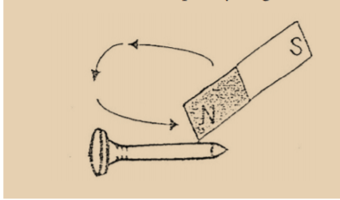
Do you know?
Magnetisation is a process in which a substance is made a permanent or temporary magnet by exposing it to an external magnetic field. This is one of the methods to produce artificial magnets.
Permanent magnets are artificial magnets that retain their magnetic property even in the absence of an external magnetic field. These magnets are produced from substances like hardened steel and some alloys. The most commonly used permanent magnets are made of ALNICO (An alloy of aluminium, nickel and cobalt). Magnets used in refrigerators, speakers, fridge and magnetic compass are some familiar examples of a permanent magnet. Neodymium magnets are the strongest and the most powerful magnets on the Earth.
Do you know?
Alnico cow magnet is used to attract sharp iron wire and other iron objects that may be ingested by animals while grazing thereby causing damage to their digestive tract.
The magnetic properties of a magnet will be removed from it by the following ways.
Earth has been assumed or imagined by the scientists as a huge magnetic dipole. However, the position of the Earth’s magnetic poles is not well defined in the Earth. The south pole of the imaginary magnet inside the Earth is located near the geographic north pole and the north pole of the earth’s magnet is located near the geographic south pole. The line joining these magnetic poles is called the magnetic axis.
The magnetic axis intersects the geographic north pole at a point called the north geomagnetic pole or northern magnetic pole. It intersects the geographic south pole at a point called the south geomagnetic pole or southern magnetic pole. The magnetic axis and the geographical axis (axis of rotation) do not coincide with each other. The magnetic axis of the Earth is inclined at an angle of about 10° to 15° with the geographical axis.
Do you know?
The most powerful magnet in the universe is actually a neutron star called magnetar (magnetic neutron star) located in the Milky Way Galaxy. The diameter of the magnetar is 20 kilometer and its mass is 2 to 3 times that of the Sun. Its magnetic field is so enormous and lethal that it is capable of absorbing all the iron atoms from the bloodstream (hemoglobin) of a living body even if it is positioned at a distance of 1000 kilometer from it.
The exact cause of the Earth’s magnetism is not known even today. However, some important factors, which may be the cause of the Earth’s magnetism, are as follows.
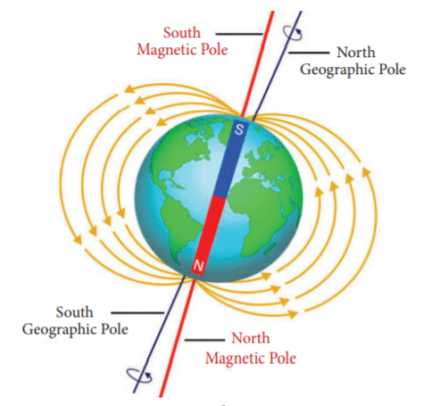
However, it is believed that the Earth’s magnetic field is due to the molten charged metallic fluid inside the Earth’s surface with a core of radius of about 3500 kilometer compared to the Earth’s radius of 6400 kilometer.
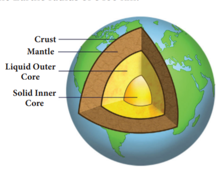
Do you know?
Pigeons have extraordinary navigational abilities. It enables them to find their way back home even if you take them to a place where they have never been before. The presence of magnetite in their beaks enables them to sense the magnetic field of the Earth. Such a magnetic sense is called magneto-reception.
A freely suspended magnetic needle at a point on the Earth comes to rest approximately along the geographical north - south direction. This shows that the Earth behaves like a huge magnetic dipole with its magnetic poles located near its geographical poles. The north pole of a magnetic needle approximately points towards the geographic north (NG). Thus, it is appropriate to say that the magnetic north pole of the needle is attracted by the magnetic south pole of the Earth (Sm), which is located at the geographic north (NG). Also, the magnetic south pole of the needle is attracted by the magnetic north pole of the Earth (Nm), which is located at the geographic south (SG). The magnitude of the magnetic field strength at the Earth’s surface ranges from 25 to 65 micro tesla.
Do you know?
Earth’s magnet is 20 times more powerful than a fridge magnet.
We come into contact with magnets offen in our daily life. They are used in wide range of devices. Some of the uses of magnets are given below.
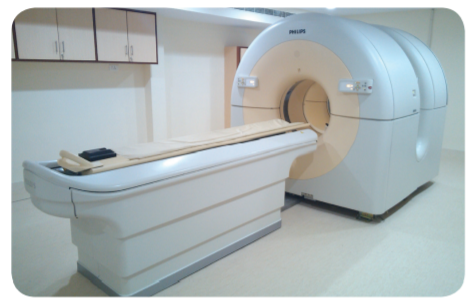
Do you know?
Maglev train (Magnetic levitation train) has no wheels. It floats above its tracks due to strong magnetic forces applied by computer controlled electromagnets. It is the fastest train in the world. The speed attained by this train is around 500 kilometer / hour
Do you know?
The strip on the back of a credit card / debit card is a magnetic strip, often called a magstripe. The magstripe is made up of tiny iron-based magnetic particles in a thin plastic film. Each particle is really a very tiny bar magnet about 20 millionth of an inch long.
ALNICO - An alloy of aluminium, nickel and cobalt.
Compass needle - A needle (or plotting compass) which consists of a tiny pivoted magnet, usually in the form of a pointer, which can turn freely in a horizontal plane.
Magnet - A piece of iron or other material, which can attract things containing iron.
Magnetic axis - The line joining the magnetic poles.
Magnetic field - The space around the magnet, in which the magnetic force is experienced within a particular region.
Magnetism - The branch of physics which deals with the property of a magnet.
Magnetisation - A process in which a substance is made a permanent or temporary magnet by exposing it to an external magnetic field.
Magnetite - A rock which has magnetic properties.